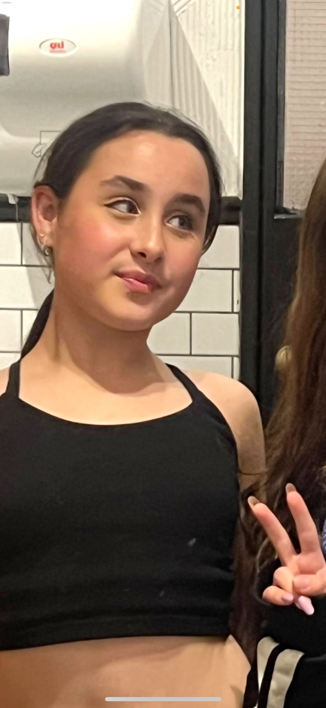
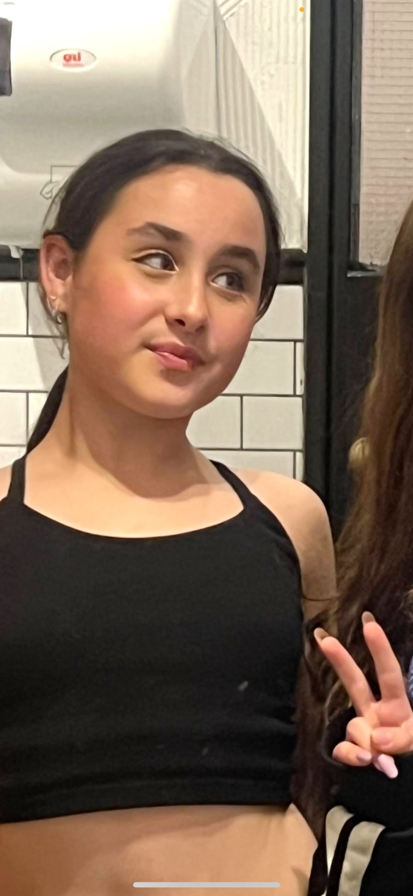

tali zabarsky
12 years old, february 14th 2012
hobbies:cooking/baking , drawing, dressing up
shes in 7th grade in ort roz
a little about her:shes 2 and a half years younger than me
she will alwys take my side no matter what.
she has a twin sister, yael. theyre best friends
she got a little sas in her perosnallity but its ok
she posts a lot on social medias and my friends laugh at me because of this.
but i guess thats just what she likes so.. i dont care.